Django特点：具有完整的封装，开发者可以高效率的开发项目，Django将大部分的功能进行了封装，开发者只需要调用即可，如此，大大的缩短了开发的时间，同时也因为太多封装导致开发灵活度和项目的运行效率不足。通常在工作当中，开发者可以使用Django快速的搭建项目，然后基于项目进行个别部分的效率优化。
框架：是对同一类型相同的代码的封装。
沙箱：起源于生物学，在生物学上经常需要独立的环境进行生物实验，这样的环境叫做沙箱环境，后来，在编程的过程当中，发现一个独立的，纯净的环境对开发效果更好，所以就有了沙箱环境。
conda create -n DjangoPath python=3.5.2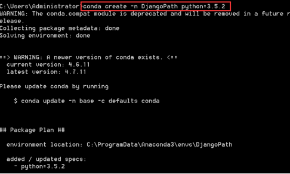
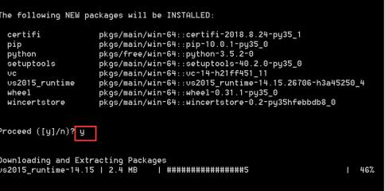
activate DjangoPath或者conda.bat activate DjangoPath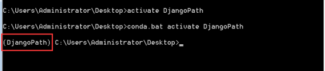
pip freeze > 1.txt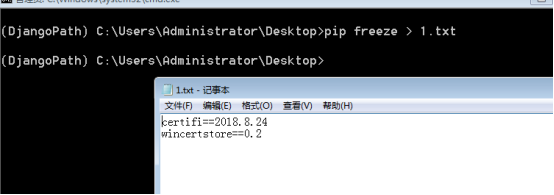
pip install -r 1.txtpip install django==2.1.8（稳定版本，可以换别的版本）django-admin startproject ArticleBlog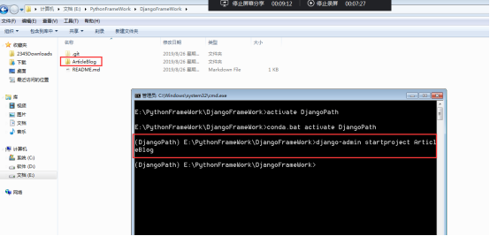
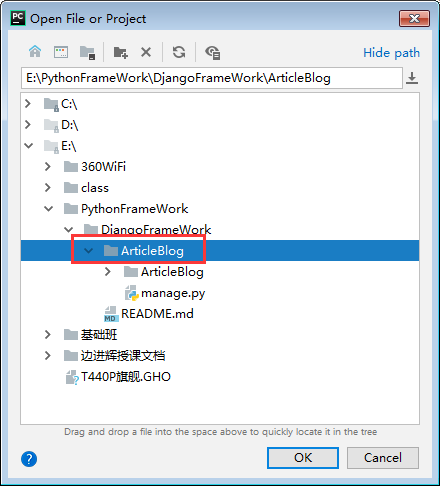
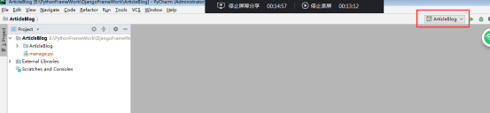
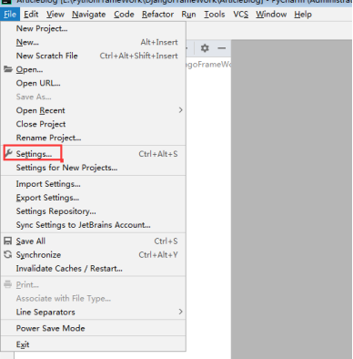
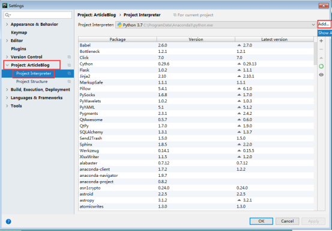
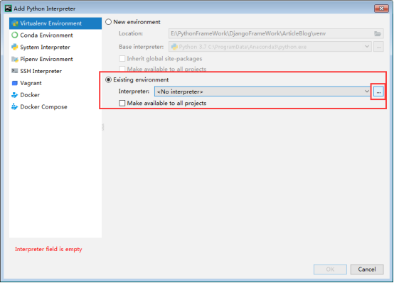
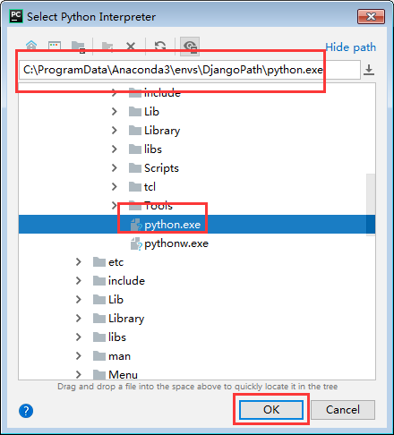
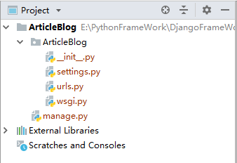
Python manage.py runserver [ip][:port]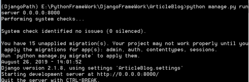
这里的ip和端口指定的是服务器监听的ip和端口
当前使用的服务器是django自带的服务器，轻量，方便使用，但是最高并发200，特别适合开发使用。